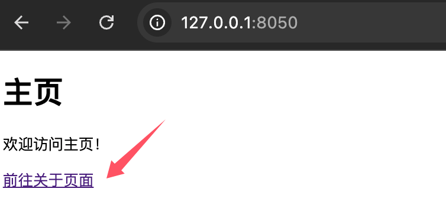

Dash Multi-Page Layout
In modern web application development, single-page applications (SPA) and multi-page applications (MPA) are two common architectural patterns.
Single-page applications typically provide a smooth user experience by dynamically loading content, while multi-page applications organize content through multiple independent pages.
Single-Page Application vs Multi-Page Application
In single-page applications, all content is dynamically loaded and updated on a single page, and users switch between different views by clicking links or buttons. The advantage of this architecture is a smooth user experience and fast page loading, but the disadvantage is that as the application scale grows, the code structure may become complex.
Multi-page applications organize content through multiple independent pages, each with its own URL and layout. The advantage of this architecture is a clear code structure and easy maintenance, but the disadvantage is that there is a certain loading delay when switching pages.
Implementation of Dash Multi-Page Layout
Implementing a multi-page layout in Dash can be done using the dcc.Location and dcc.Link components.
dcc.Location is used to track the current page URL, while dcc.Link is used for navigation between pages. By combining callback functions, different page content can be dynamically loaded based on the URL.
Usage
dcc.Locationanddcc.LinkMulti-page layout can be implemented.Through callback functions, based on
pathnamedynamically load page content.By combining modular layouts and URL parameters, more complex multi-page applications can be built.
Basic Structure of Multi-Page Layout
The core idea of a multi-page layout is to dynamically load different page content based on the URL pathname.
The following are the basic steps for implementing a multi-page layout:
Define page layout：
-
The layout of each page can be defined as a function or variable.
-
For example,
home_layoutRepresents the home page,about_layoutRepresents the About page.
Usagedcc.Location：
-
dcc.LocationThe component is used to track the current page URL. -
Through
pathnameThe property gets the path of the current page.
Usagedcc.Link：
-
dcc.LinkThe component is used to create page navigation links. -
Through
hrefThe property specifies the path of the target page.
Dynamically Load Page Content：
-
Use callback functions to dynamically return the corresponding page layout based on
pathnamedynamically returns the corresponding page layout.
Example
# Create Dash App
app = Dash(__name__)
app.layout = html.Div([
dcc.Location(id='url', refresh=False),
html.Div(id='page-content')
])
In the above code,dcc.Locationcomponent'sidSet tourl，refreshParameter set toFalseIndicating that the page does not refresh when the URL changes.html.Div(id='page-content')It is a placeholder used to display the content of different pages.
Define page layout
Next, we need to define the layouts of different pages. Each page layout can be an independent function or variable. For example, we can define two page layouts:index_pageandpage1。
Example
html.H1("Home"),
dcc.Link('Go to page 1', href='/page1')
])
page1 = html.Div([
html.H1("Page 1"),
dcc.Link('Back to Home', href='/')
])
In the above code,index_pageis the layout of the homepage, containing a title and a link; clicking the link navigates topage1。page1is the layout of page 1, also containing a title and a link back to the homepage.
Dynamically Load Page Layout
Finally, we need to use a callback function to dynamically load different page layouts based on URL changes. The callback function determines based on thedcc.Locationcomponent'spathnameattribute which page layout to display.
Example
[Input('url', 'pathname')])
def display_page(pathname):
if pathname == '/page1':
return page1
else:
return index_page
In the above code,display_pageThe function receivespathnameas input, and based onpathnamereturns the corresponding page layout. IfpathnameYes/page1, then returnspage1layout; otherwise returnindex_pagethe layout.
Complete example
The following is a complete Dash multi-page layout example, including a home page, an about page, and a 404 page.
Example
# Create Dash App
app = Dash(__name__)
# Define homepage layout
home_layout = html.Div([
html.H1("Home"),
html.P("Welcome to the homepage!"),
dcc.Link(Go to About page, href='/about')
])
# Define the About Page Layout
about_layout = html.Div([
html.H1("About page"),
html.P(This is the content of the about page.),
dcc.Link('Back to Homepage', href='/')
])
# Define 404 page layout
not_found_layout = html.Div([
html.H1("404 - Page Not Found"),
html.P(The page you visited does not exist.),
dcc.Link('Back to Homepage', href='/')
])
# Define the application layout
app.layout = html.Div([
dcc.Location(id='url', refresh=False), # Used to Track the URL
html.Div(id='page-content') # Used to dynamically load page content
])
# Define the callback function
@app.callback(
Output('page-content', 'children'), # Output to the children property of the Div with id 'page-content'
Input('url', 'pathname') # Inputcome自 id is 'url' of Location component's pathname Property
)
def display_page(pathname):
if pathname == '/':
return home_layout # Show Homepage
elif pathname == '/about':
return about_layout # Display About page
else:
return not_found_layout # Display 404 page
# Run the app
if __name__ == '__main__':
app.run_server(debug=True)
After running the application, visithttp://127.0.0.1:8050/You can see the homepage content, click"Go to About Page"The link can navigate to the About page; clicking"Back to Home"The link can return to the homepage.

Code explanation
Page layout：
-
home_layout: Layout of the home page, containing a title, a description, and a link to the about page. -
about_layout: Layout of the about page, containing a title, a description, and a link to the home page. -
not_found_layout: Layout of the 404 page, used to handle nonexistent paths.
dcc.Location：
-
id='url': Used to track the URL of the current page. -
refresh=False: Disables page refresh to achieve the single-page application (SPA) effect.
dcc.Link：
-
is used to create page navigation links,
hrefThe property specifies the path of the target page.
callback function：
-
According to
pathnamedynamically returns the corresponding page layout based on the value. -
If the path is
/, returnhome_layout。 -
If the path is
/about, returnabout_layout。 -
If the path does not match, return
not_found_layout。
Extensions
For more complex multi-page applications, the following methods can be combined to optimize the code structure:
1. Use modular layout
Define each page's layout in a separate module for easier maintenance and expansion.
Create pages/home.py:
Example
layout = html.Div([
html.H1("Home"),
html.P("Welcome to the homepage!"),
dcc.Link(Go to About page, href='/about')
])
Create pages/about.py:
Example
layout = html.Div([
html.H1("About page"),
html.P(This is the content of the about page.),
dcc.Link('Back to Homepage', href='/')
])
Import the layout in the main application:
from pages.home import layout as home_layout from pages.about import layout as about_layout
2. Use URL parameters
Pass URL parameters through the `search` or `pathname` property of `dcc.Location` to implement more flexible page logic.
Example
Output('page-content', 'children'),
Input('url', 'pathname')
)
def display_page(pathname):
if pathname == '/':
return home_layout
elif pathname.startswith('/about'):
# Parse URL parameters
return about_layout
else:
return not_found_layout